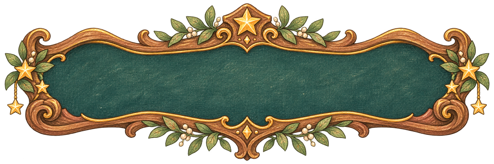
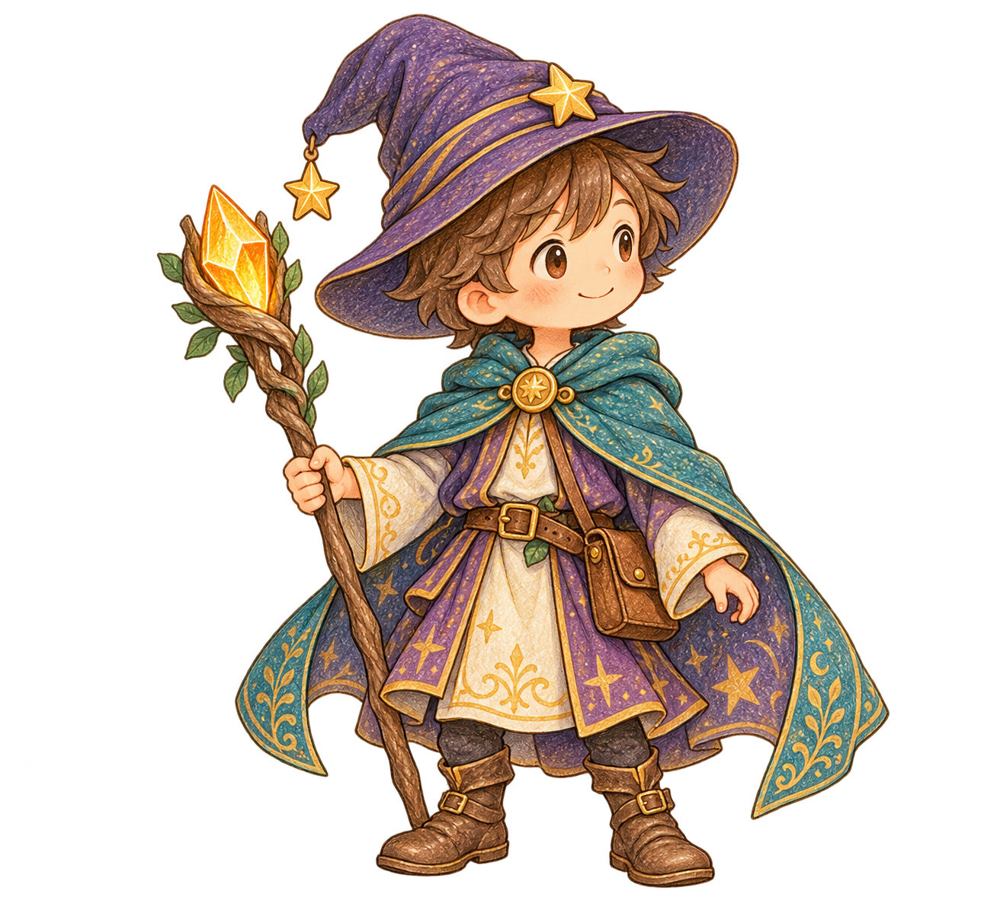
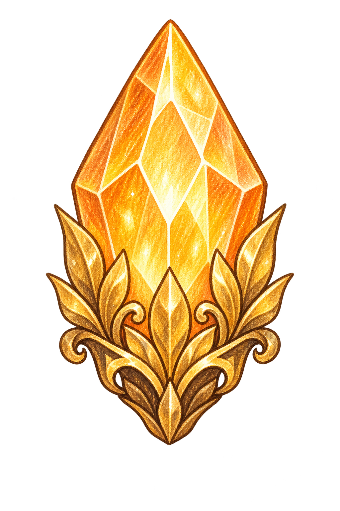

回血藥水
立即恢復 40 HP，上限 100。

讓知識成為魔法，讓思考點亮森林。
你是一位擁有 100 HP 的魔法師，將依序挑戰野狼、毒蠍、惡鬼、巨龍與魔王。每關兩題，題目取自專案的師資生工作坊簡報。
答對施法
攻擊怪物，獲得 30 金幣。
答錯學習
扣除 25 HP，閱讀正解與解析。
關間補給
用金幣購買藥水、水晶與復活符。
每關兩題後結算：怪物還有 HP 時，每 10 HP 造成 5 點傷害。攻擊水晶可降低這段傷害。滿分 100 分，每題 10 分；商店不影響成績。

知識魔法師立即恢復 40 HP，上限 100。

永久提升 10 攻擊，最多兩次。
HP 歸零時自動消耗，回復 60 HP。